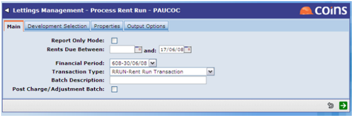

Process Rent Run has two functions. Firstly it generates the tenant rent debit note based on the details held on the tenancy record.
Secondly it will generate a landlord credit rent note. A landlord rent transaction is generated once the tenant cash has been received and allocated to a tenant rent transaction. For landlords this will also create the management fee and tax deduction transactions.
For properties under the guaranteed rent scheme, it is the internal landlord that gets credited/debited as the actual landlord receives cash from the company offering the guaranteed rent. For these properties the management fee is always deducted regardless of whether there is a tenancy or not.
